Sieberrsec CTF 3.0
December 26, 2021
December 26, 2021
This was my first real 'serious' CTF, apart from my various small YCEP experiences. All in all, even though about 99% of the challenges I solved were OSINT, I found the challenges a lot of fun and good learning experiences.
Here are some of the more interesting ones I managed to solve, some during the CTF and some after the event.
Solves: 45
Well, boss instructed me not to reveal much, but we're planning some heist and I need your help.
One of our men tailed someone to their home quite a while back.
He discreetly took a quick picture to mark the location of the person's house.
Please help me determine the location.
(Actually, the heist was planned to be carried out sometime then, but due to unforeseen circumstances it was delayed and we are now revisiting the resources we had obtained back then).
Submit the flag as IRS{A_B_C_D_E}, where:
A. Unit Number (without any spacing and numbers only)
B. Street Name (without any spacing and in all capitals) [e.g. If the road name is "John Rd", input as "JOHNRD"; "John St" > "JOHNST"]
C. Locality Name (without any spacing and in all capitals)
D. Postcode (numbers only)
E. Number of Storeys of the House (without any spacing and numbers only)
Addendum for "The Sieberr" Heist Part 1:
A locality is found within the suburb 🙂
An image is attached, which seems to show some sort of orange to black gradient.

Since the picture was taken at the location of the person we are targeting, it would probably have some meaningful location data on it. A quick look at the EXIF data gives us this:
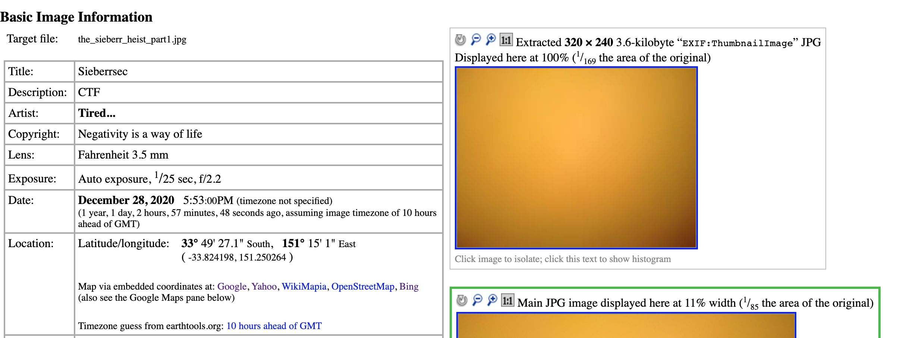Looks like we're on the right track! Looking up the coordinates on Google Maps gives us a location in Australia, specifically in Mosman, NSW.
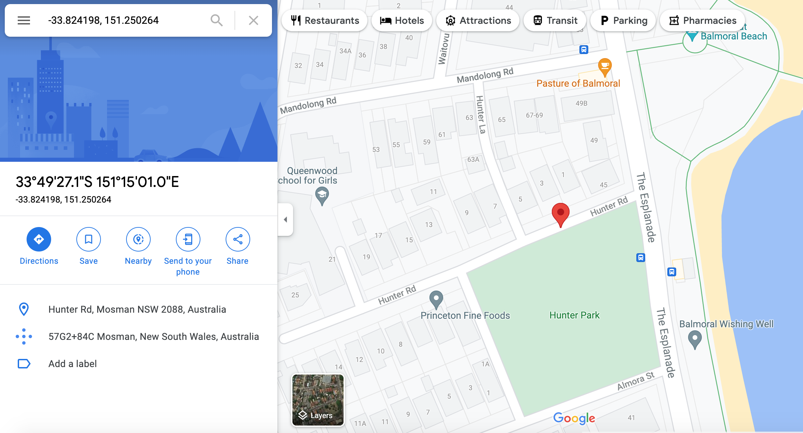From here, we can already see that the street is called Hunter Rd and the postcode is 2088. Let's take a look at street view to see if we can find some more of the information needed.

Now we can clearly see that the unit number is 3 and that the house has 2 storeys.
Now for the locality name - Mosman, right? Well, no.
I was stuck on this for a little while until the challenge author clarified that the locality was within this specific suburb in Mosman. Looks like we have to dig deeper.
Taking a look at the Wikipedia page, we see that Mosman has a few traditional locality names.
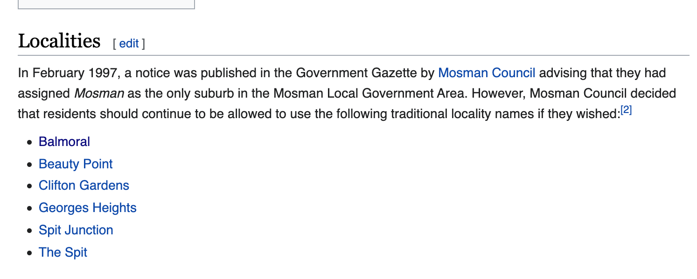Looking back at the surroundings on Google Maps, we can see quite a few places with the name "Balmoral" in them, including the Balmoral Beach. Looks like our target lives in Balmoral!
So, final flag would be: IRS{3_HUNTERRD_BALMORAL_2088_2}
Solves: 22
We retrieved this photo from the person's phone.
How did we get it? You don't need to know, don't be silly and ask too many questions.
Anyway, the IT team commented that the guy seemed particularly interested in this photo. Unfortunately though, they were not able to find more info.
Tell me as much information as you can deduce from this photo.
Submit the flag as IRS{A_B_C_D_E_F}, where:
A. Name of the street that the photo was taken on (without any spacing and in all capitals) [e.g. If the road name is "John Rd", input as "JOHNRD"; "John St" > "JOHNST"]
B. Name of the cross street (without any spacing and in all capitals) [e.g. If the road name is "John Rd", input as "JOHNRD"; "John St" > "JOHNST"]
C. Bus manufacturer (without any spacing and in all capitals)
D. Bus model (without any spacing and in all capitals)
E. Bus route number (any letter should be in capitals)
F. Destination of the bus route that the bus is heading to (without any spacing and in all capitals)
This one is not easy.
An image is attached, showing a bus at a traffic light.
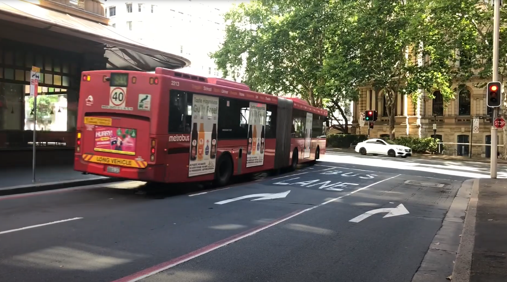At first glance, this doesn't really seem useful. EXIF data doesn't yield anything.
Upon closer inspection, we can clearly see that the bus's operator is Metrobus, its identification number (not sure what to call it) is 2213 and its route number seems to be either 540 or 340. We can work with this - let's research more about this "Metrobus".
Based on the previous part, the operator we need is the Metrobus in Sydney, which has a Wikipedia page conveniently detailing its routes.
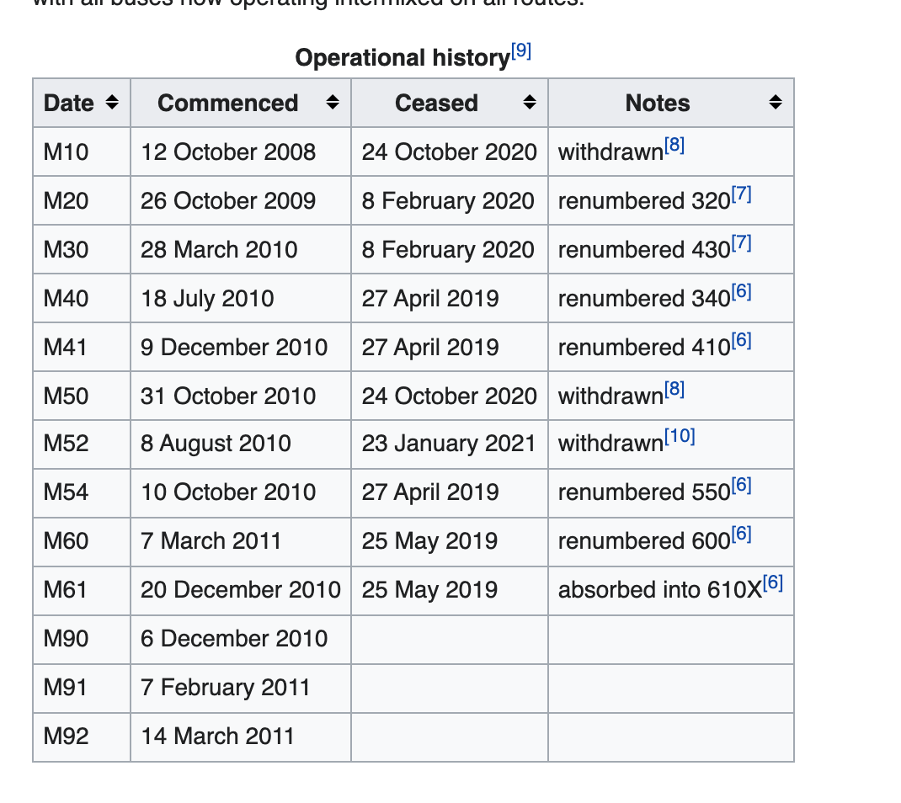It doesn't have any routes numbered 540, but it does have route 340 (recently renamed from M40 to 340)
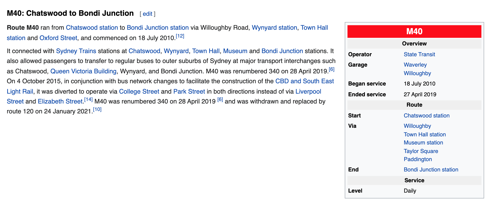Looking at the route, we get a list of stations to check out. We see that its end destination is Bondi Junction - cool, now to find the location of the image.
This stumped me for quite a bit - this list is very vague and doesn't tell me what route the bus takes to reach these stations. Doing a bit more research, I came across this site
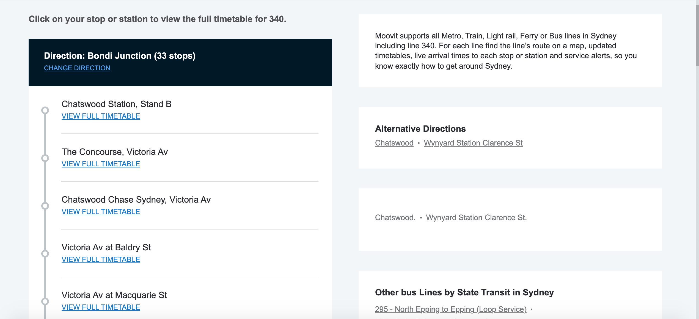I ended up looking up each station on Google Maps until I got to Town Hall, which looked a lot more business-y than the other stations, which were more suburban and quiet. This looked like it was a bit more accurate!

After a bit of wandering around, I managed to find the columned building in the picture - the Sydney Town Hall - and the [almost] exact location of the picture. The photo was taken on York St, with the cross street being Druitt St.

So, what about the bus manufacturer and model? Looking online at the specific bus 2213, we find this local bus enthusiast website which has a better picture, clearly showing the bus to be manufactured by Volvo.
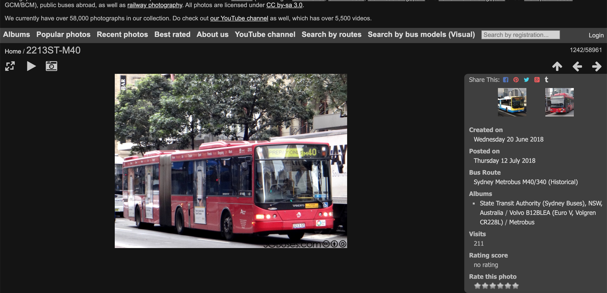After some more searching (i.e. "metrobus sydney volvo"), the exact model was found to be the B12BLEA. Nice!
So, our final flag would be: IRS{YORKST_DRUITTST_VOLVO_B12BLEA_340_BONDIJUNCTION}
Solves: 12
Alright, there are some new developments and I need your help again.
The guy's name is Casrihms Myrert, you can find him on social media.
He's going to a hospital to visit someone's kid, but we hear that there is another person that he will be visiting in the same hospital. This other person is of interest to us.
Let me know what hospital he is going to, as well as what bus he is taking.
Submit the flag as IRS{A_B_C}
A. Bus route number (any letter should be in capitals)
B. Destination of the bus route that the bus is heading to (without any spacing and in all capitals)
C. Name of the hospital that our guy is going to (without any spacing and in all capitals)
More buses, eh?
Searching for the name "Casrihms Myrert" on Google didn't bring up any accounts, so I checked on common social media platforms, like Twitter and Instagram. Instagram brought up an account that looks like our guy.
His posts didn't yield anything particularly interesting, but one of his highlights seems pretty interesting.
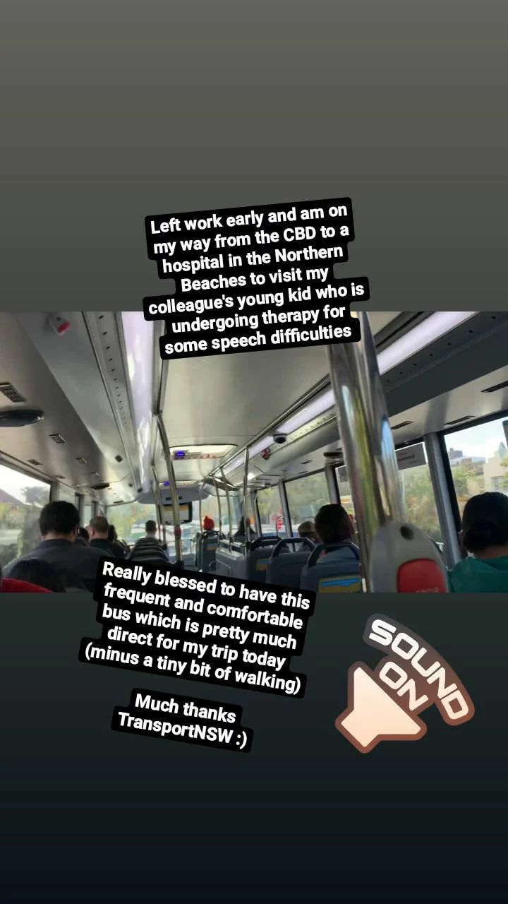So, we are looking for a (pretty much direct) bus going from the Sydney CBD to a hospital in the Northern Beaches.
The reference to TransportNSW leads us to a really useful website, showcasing all of the bus routes in NSW.
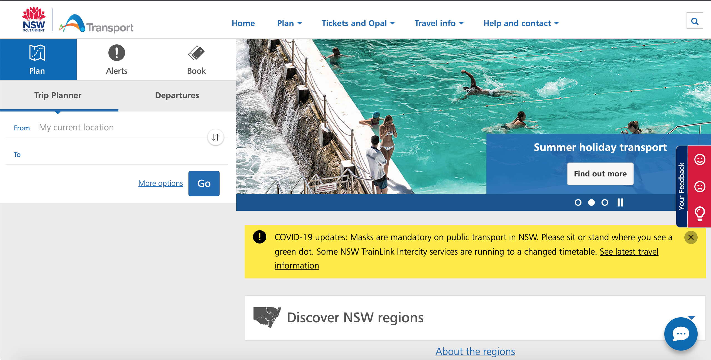Before we start going crazy looking up hundreds of bus routes to the Northern Beaches (which I totally did not do for over an hour), let's take a closer look at that highlight again.
After analysing the image further (based on the fact that no driver is visible and the fact that the cars in front are quite far below), we realise that the bus he is taking is actually a double decker. It turns out that this is a huge clue for us, because Sydney only has one double decker bus line, the B-Line, conveniently passing from the CBD to the Northern Beaches.
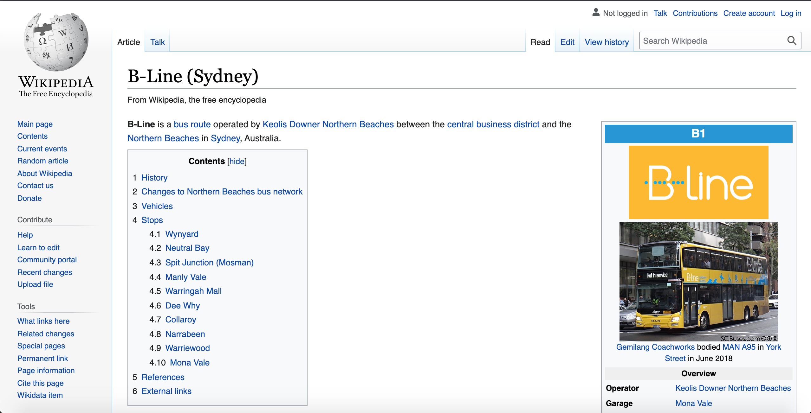Wow, isn't it great we didn't waste our time looking at every bus line to the Northern Beaches in Sydney? That would have been really infuriating! (I hope you sense the pain in my words)
The B-Line route is called B1 and looking it up on the TransportNSW website (or reading the Wikipedia article) shows that its two stops are at the City and Mona Vale. Since our target is going from the CBD to the hospital, our destination would have to be Mona Vale.
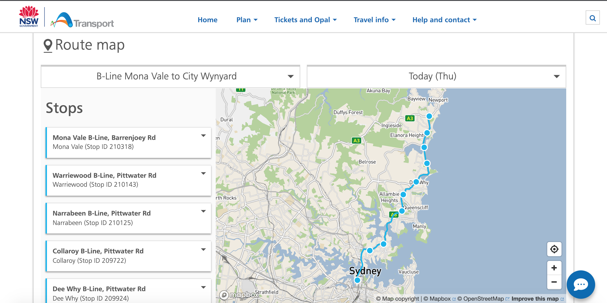Now, which hospital should we choose? The obvious first choice is Northern Beaches Hospital, which is in a suburb called Frenchs Forest. Looking at the route map again, however, the B1 route does not directly pass through there - no dice. The second option that shows up on Google is, fittingly, Mona Vale Hospital, which the B1 goes directly to. Looks like we have our target!
Our flag would be: IRS{B1_MONAVALE_MONAVALEHOSPITAL}
Solves: 30
Oh no, I've encrypted a file and deleted the original! Now I have a file that is filled with rubbish. Thankfully I still have the encryption script, help me recover the original file! I'll even give you a flag if you do.
I didn't solve the two parts to this challenge during the CTF, but managed to do so after the fact and found them interesting, so I'm doing these small write ups on them.
We get an encrypted file that looks like this:
54574555140204321301090548435715603553305902483261394909
And an encryption script:
import base64
flag = open("flag.txt", "rb").read()
flag = base64.b64encode(flag)
flag = flag.decode('ascii')
digits = "0123456789abcdefghijklmnopqrstuvwxyzABCDEFGHIJKLMNOPQRSTUVWXYZ+/="
encrypted = ""
for c in flag:
cur = digits.find(c)
if(cur < 10):
encrypted = encrypted + '0' + str(cur)
else:
encrypted = encrypted + str(cur)
f = open("flag.txt.encrypted", "w")
f.write(encrypted)
f.close()
How does it work? The flag was encrypted into base64 and neatly formatted (how kind), then the index of each character in the base64 flag in the digits string was determined and appended to the encrypted string, which is what we got as the encrypted file.
Thanks to the fact that a 0 is added in front whenever an index below 10 is obtained, we can space out the encrypted file text every two characters to get the index of each base64 flag character in the digits string (I'm sorry if this sounds longwinded/confusing).
54 57 45 55 14 02 04 32 13 01 09 05 48 43 57 15 60 35 53 30 59 02 48 32 61 39 49 09
Finally, we can write a simple python script to obtain the base64 flag from the digits string.
digits = "0123456789abcdefghijklmnopqrstuvwxyzABCDEFGHIJKLMNOPQRSTUVWXYZ+/="
encrypted_file=[54, 57, 45, 55, 14, 2, 4, 32, 13, 1, 9, 5, 48, 43, 57, 15, 60, 35, 53, 30, 59, 2, 48, 32, 61, 39, 49, 9]
decrypted_file=""
for i in encrypted_file:
decrypted_file += digits[i]
print(decrypted_file)
Our base64 flag would be printed as: "SVJTe24wd195MHVfYzRuX2MwZDN9", which we can decrypt to obtain our real flag - IRS{n0w_y0u_c4n_c0d3}.
Solves: 14
Thanks for helping me recover that file, now I have another file but it has been encrypted into something entirely different. Think you can help me again?
We get a huge encrypted file called "flag.jpg.encrypted". Indeed, looking at the encryption script, we're dealing with an encrypted jpg file.
import base64
flag = open("flag.jpg", "rb").read()
key = int(open("key.txt", "r").read())
flag = base64.b64encode(flag)
flag = flag.decode('ascii')
digits = "0123456789abcdefghijklmnopqrstuvwxyzABCDEFGHIJKLMNOPQRSTUVWXYZ+/="
encrypted = ""
for c in flag:
cur = (digits.find(c) + key) % 65
if(cur < 10):
encrypted = encrypted + '0' + str(cur)
else:
encrypted = encrypted + str(cur)
f = open("flag.jpg.encrypted", "w")
f.write(encrypted)
f.close()
A similar concept to the previous one. The only difference is that every two characters in the encrypted file are equal to the remainder of the (digits index added to an unknown key number) divided by (65).
The difficulty here, of course, is the fact that we don't know what the key number is. I'm not actually sure how you're intended to solve this - I was at a loss for quite a while.
One thing that struck me, however, looking at the encrypted file is the fact that the number 50 appears very frequently. Perhaps a bit of frequency analysis is possible? Analysing one of my own, unencrypted JPG files, I found the capital 'A' character to be very frequent - why not try it out?
The index of capital 'A' in the digits string is 36. Thus, (36 + key) % 65 = 50 should get us the key: 14. It's worth a shot with a python script, right?
digits = "0123456789abcdefghijklmnopqrstuvwxyzABCDEFGHIJKLMNOPQRSTUVWXYZ+/="
encrypted_file = open("flag.jpg.encrypted", "rb").read()
encrypted_file = encrypted_file.decode('ascii')
encrypted_array = []
reformed_array = []
decrypted = ""
n = 0
while n < len(encrypted_file):
encrypted_array.append(encrypted_file[n:n+2])
n+=2
for i in encrypted_array:
if i[0] == "0":
reformed_array.append(i[1])
else:
reformed_array.append(i)
for i in reformed_array:
decrypted += digits[int(i)-14]
print(decrypted)
This gets us a nice, long bit of base64 string. Decrypting and rendering it in CyberChef gets us this decrypted jpg.
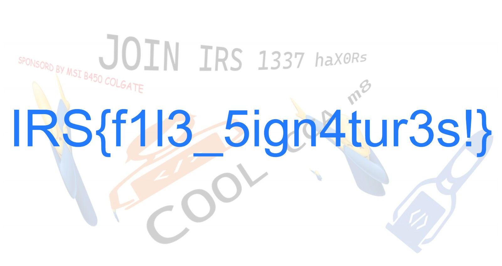Wow, it actually worked! The flag makes me think that there was a much more obvious, less cheese-y way to do this with file signatures(maybe?), but I didn't figure it out.
Our final decrypted flag: IRS{f1l3_5ign4tur3s!}